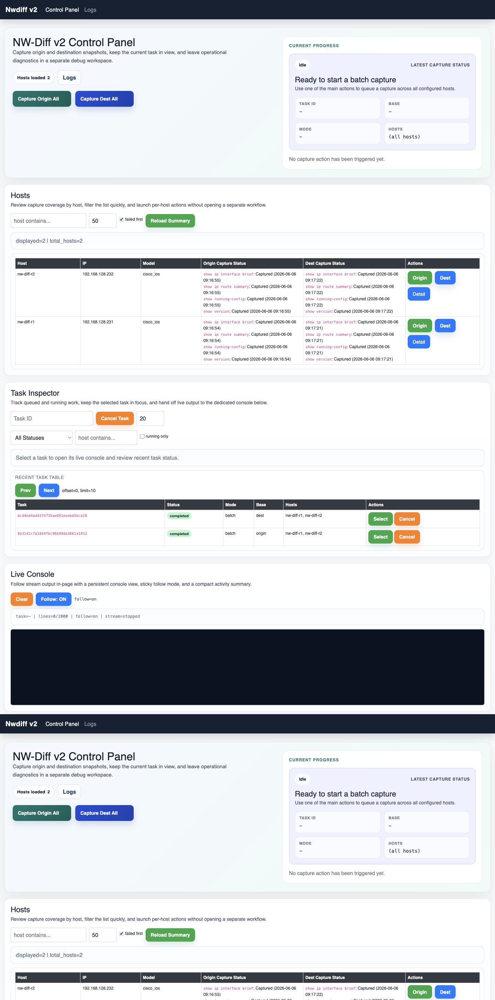
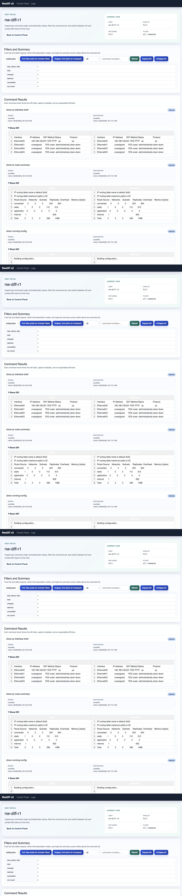
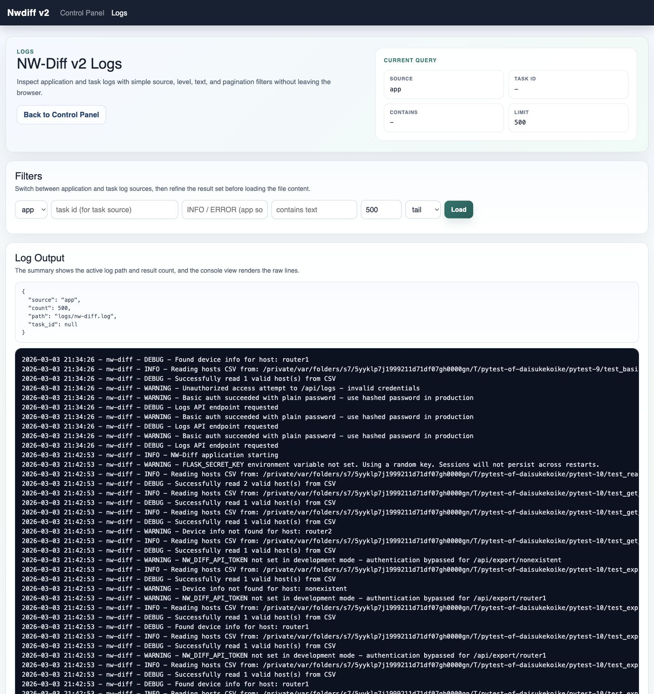

Network change verification, from capture to diff
See every network change before it becomes an outage.
NW-Diff turns device snapshots into an operator-friendly review flow: capture the before state, capture the after state, compare command output, and keep logs close when investigation is needed.

Guided operating flow
A tour built around the way network teams review changes.
Load the device inventory
Start from a CSV inventory and see every host, model, and capture state in one table.
Capture origin and destination
Run before and after captures across all hosts or target a single device when the change window is narrow.
Compare command output
Open host detail to inspect per-command deltas, timestamps, and unchanged output without leaving the UI.
Trace operational evidence
Use logs and task history to confirm what ran, when it ran, and which device needs follow-up.
Product screenshots
The interface stays focused on evidence, not decoration.
Control panel for live coverage
Operators can start origin or destination captures, monitor the current task, filter hosts, and confirm per-command coverage without opening separate tooling.
- Batch actions are one click away during a change window.
- Host rows expose command coverage before opening detail.
Batch capture
Task progress
Per-command coverage
Host detail for command-level review
The host view brings inventory metadata, capture actions, comparison summaries, and command output into a single evidence trail for one network device.
- Inventory metadata remains visible while reviewing output.
- Changed and identical commands can be scanned in one pass.

Device metadata Compare controls Command resultsLogs for investigation and handoff
Runtime logs are close to the workflow, so failed captures and deployment checks can be investigated with context instead of switching to a terminal first.
- Filters keep noisy runtime output manageable.
- Log entries support handoff after failed captures.

Source filters Runtime trailRun it locally
Start the v2 UI and follow the same tour with your devices.
cp hosts.csv.sample hosts.csv
export DEVICE_PASSWORD=your_device_password
export NW_DIFF_ENV=development
./scripts/start-v2.shOpen http://127.0.0.1:5000/v2 after startup.